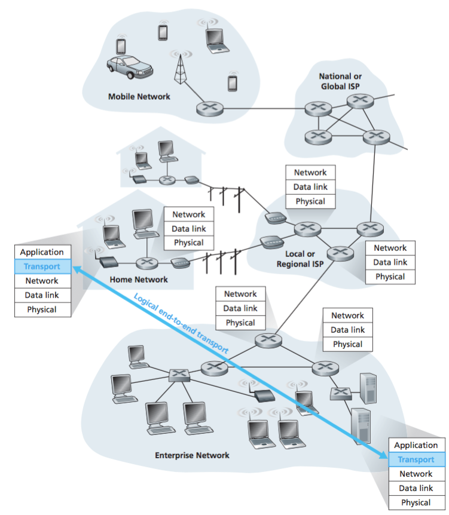
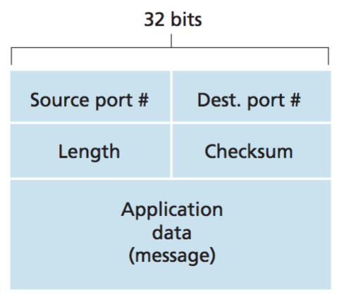
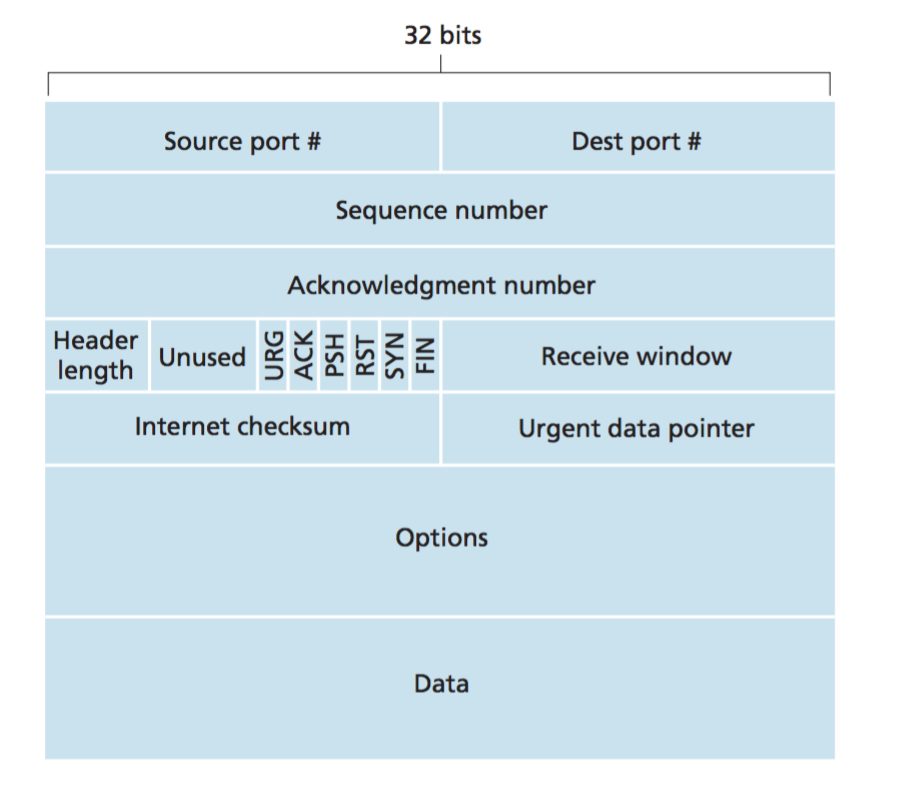

Sistemas Operativos y Redes
Capa de Transporte
Semestre 2022-1
Cristian Ruz - cruz@ing.puc.cl
Departamento de Ciencia de la Computación
Pontificia Universidad Católica de Chile
Protocolos de Transporte
Objetivo: Conseguir que un mensaje llegue desde emisor a receptor

- Emisor. Recibe un mensaje de capa de aplicación, lo divide en segmentos, y solicita a la capa de red que envíe los segmentos al receptor. Routers no examinan headers de transporte.
- Receptor. Recibe segmentos, los ensambla para formar el mensaje, y lo entrega a la capa de aplicación.
Dos protocolos representativos de medios de transporte:
- TCP: Entrega confiable y ordenada. Control de flujo. Establecimiento de conexión.
- UDP: Entrega no confiable y desordenada. Mejor esfuerzo.
Segmentos
Mensaje se divide en segmentos.
Segmentos se transmiten en paquetes IP.
¿Cómo identificar mensajes a distintos procesos?
- Puerto permite identificar procesos dentro del nodo emisor o del nodo receptor.
- Puerto permite multiplexar mensajes

Multiplexión
Proceso envían mensajes a través de sockets del Sistema Operativo
- Cada socket se crea con un número de puerto específico
- Cada host puede tener múltiples sockets abiertos
Demultiplexión sin conexión
Segmento UDP identificado por: $\langle$IP destino, puerto destino$\rangle$
- Receptor observa el puerto de destino
- Pasa el segmento al proceso asociado al puerto de destino
Demultiplexión con conexión
Segmento TCP identificado por: $\langle$ IP origen, puerto origen, IP destino, puerto destino$\rangle$
Servidores pueden gestionar múltiples conexiones TCP
- Se pueden asociar distintos sockets a distintos clientes
UDP
User Datagram Protocol
- Servicio de "mejor esfuerzo" (best-effort).
- Segmentos pueden perderse.
- Segmentos pueden llegar en distinto orden.
Servicio no orientado a conexión (connection-less)
- No se establece conexión previa
- No mantiene estado de conexión
- Cada segmento se gestiona de manera independiente
Segmento UDP solo tiene 8 byte de overhead

UDP Segment
¿Por qué mejor UDP?
- Aplicación puede controlar directamente el envío
- No hay demora en establecer conexión
- Menor overhead de tiempo
- No se reservan recursos
- Menor overhead de espacio: 8 byte
- TCP tiene 20 byte

Reliable Data Transfer
Desafío: Proveer transferencia confiable (reliable) sobre un medio no confiable (unreliable)
Versión 1.0. Canal de transmisión confiable.
Supuesto fuerte, pero simple.
Sender
- Al recibir solicitud de envío, crea un paquete y envía
Receiver
- Al recibir paquete, extrae mensaje y lo pasa a aplicación
Problema: Los paquetes pueden llegar con errores
Versión 2.0. Protocolo ARQ (Automatic Repeat reQuest)
- Detección de errores. Envía checksums.
- Paquetes de feedback. ACK (acknowledgment) y NAK (negative ACK)
- Retransmisiones.

¿ACK o NAK con errores? El sender no sabe si el receiver recibió correctamente o no.
- ¿Retransmitir al recibir un ACK o NAK corrupto? Pueden llegar duplicados.
Versión 2.1. Agregar un sequence number. Por ahora, 1-bit.
Versión 2.2. Podemos eliminar los NAK. Cada ACK adjunta el sequence number
¿Y si se pierden paquetes?
Versión 3.0. Timeout para retransmisión en el sender.
Funcionamiento sin pérdida. (b) Con un paquete perdido
Funcionamiento con ACK perdido. (d) Con un timeout prematuro
Protocolos mandan de un paquete a la vez (stop and wait). Se envían varios paquetes simultáneos en modo pipelined.

Se necesitan más características.
- Números de secuencia deben ser incrementales
- Tanto emisor como receptor necesitan buffers
- Dos enfoques para manejar paquetes: Go-Back-N, Selective Repeat
Go-back-N
- Emisor puede mantener hasta $N$ paquetes sin ACK
- Receptor envía ACK por el último paquete recibido correctamente
- Emisor usa timer para paquete más antiguo sin ACK
- Si el timer expira, se retransmite todo el grupo de paquetes sin ACK
basees el paquete más antiguo que aún no tiene ACKnextseqnumes el próximo número de secuencia a usarNes un window size. También se conoce como sliding window protocol- Ejemplo con
N=4
Selective Repeat
- Emisor puede mantener hasta $N$ paquetes sin ACK
- Receptor envía ACK para cada paquete individual
- Emisor usa timer para paquete más antiguo sin ACK
- Si el timer expira, se retransmite solo paquetes sin ACK
TCP
Transport Control Protocol
- Protocolo de transmisión fiable
- Transmisión encadenanada chained
- Control de flujo a través del tamaño de la ventana
- Buffer en emisor y en receptor
- Orientado a conexión
- Protocolo de establecimiento de conexión (handshake) antes de enviar paquetes de datos

- Tamaño máximo de segmento: MSS, Maximum Segment Size
- Números de secuencia además cuentan bytes en la secuencia
- ACK contienen el sequence number del siguiente byte que se espera. Cumulative ACKs.
- Mensaje de respuesta funciona también como ACK. Piggybacked ACK
Ejemplo: TELNET
Algoritmo de transmisión fiable de TCP
SendBasees la base de la ventanaNextSeqNumse actualiza al crear un segmento nuevo para enviar- Al expirar el timer se retransmite el segmento con menor sequence number.
- El paquete enviado, o el ACK pueden haberse perdido
- Si llega un ACK con valor mayor a
SendBase, se actualizaSendBase - Esto significa que ya se han recibido los paquetes con valor menor a
SendBase - Puede haberse perdido el ACK de los paquetes anteriores
- Este es el funcionamiento del cumulative ACK
Caso: ACK perdido y retransmisión
Si el ACK se pierde, se produce timeout
- A reenvía el paquete más antiguo sin ACK (Seq=92)
- A reinicia el timer
- B recibe Seq=92 duplicado. Lo descarta, pero reenvía ACK
Caso: Timeout prematuro
Timeout ocurre antes que llegue el ACK
- A reenvía el paquete más antiguo sin ACK (Seq=92), y reinicia timer (Seq=92)
- A recibe ACK y reinicia timer, por Seq=100
- A NO reenvía Seq=100, ya que su ACK llega antes del timeout
- B recibe Seq=92 duplicado. Lo descarta, pero envía (cumulative) ACK
Caso: Cumulative ACK evita retransmisión
ACK por Seq=92 se pierde
- El ACK=120 (ACK de Seq=100) llega antes del timeout de Seq=92
- Cumulative ACK (ACK=120) indica que se ha recibido el Seq=92 y el Seq=100
- A NO reenvía Seq=92
- A incrementa
SendBase
Retransmisión rápida
- Timeouts pueden tomar mucho tiempo
- Retransmisión rápida envía proactivamente segmentos probablemente perdidos, antes que ocurra un timeout
TCP Handshake Protocol
Establecimiento de conexión TCP
- Paso 1. Cliente envía segmento
SYNal servidor - Incluye número de secuencia inicial (de cliente)
- Paso 2. Servidor recibe
SYN, y responde conSYN ACK - Servidor asigna buffer
- Servidor establece número de secuencia inicial (de servidor)
- Paso 3. Cliente recibe
SYN ACK, y responde conACK - Este paquete ya puede contener datos
Cliente y servidor